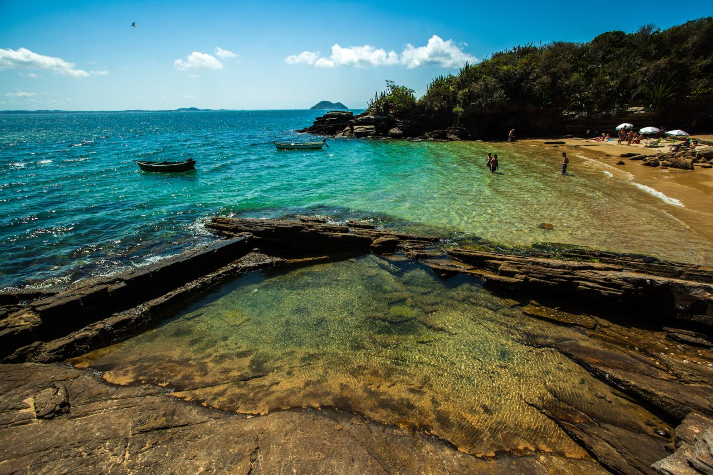
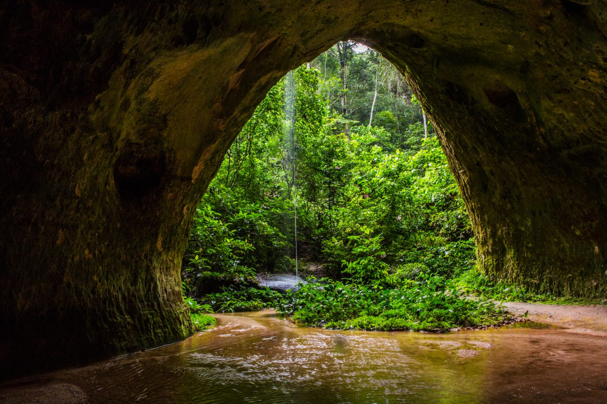

Visit Brazil - A guide to when, where, and how to visit Brazil

Imagine yourself going on an adventure in the Amazon Forest or in the Pantanal, being amazed by the beauty of the nature in Foz do Iguaçu or Bonito, living the culture of São Luís or Ouro Preto, trying the hustle and bustle of great centers such as Rio de Janeiro or São Paulo, or simply relaxing and enjoying the sun and the breeze of the ocean in Fernando de Noronha or Trancoso. This is what you can discover when you visit Brazil.
Brazil is a continental country: Its 3.3 million square miles make up almost half of South America. Containing six biomes, the country holds the largest biodiversity on the planet, not to mention the 4,500 mile-long coastline with paradise beaches and attractions for all tastes.
It is also a young country marked by a mixture of cultures originating from Portuguese colonizers and a native indigenous population, Africans brought over during the colonial period, and Europeans and Asians who arrived at the beginning of the 20th Century. Many traditions and artistic manifestations, such as the famous Brazilian Carnival, which has different characteristics all over the country, have emerged from this cultural melting pot.
In fact, Brazil offers infinite possibilities to the traveler. Going there may be simpler than many Americans imagine. Even so, some tips may come in handy before one makes the decision to pack his or her bags and head south.
.") Sao Pedro Church in Gramado, Brazil | Courtesy Embratur Image Bank.
Sao Pedro Church in Gramado, Brazil | Courtesy Embratur Image Bank.
The best time of the year to visit Brazil
Brazil is a tropical country, with high average temperatures and plenty of rain throughout the year. Due to its huge size, however, its regions show strong climatic differences.
During the summer, from December to March, thermometers will normally stay above 75° F in most of the country, and might even reach 104 ° F in some places. December, January, and February are great months to visit busier coastal destinations, such as Maceió, Porto Seguro, Búzios, and Balneário Camburiú.
During Brazilian winter, nevertheless, between June and September, average temperatures will drop drastically and even go below 32° F in some cities in the south of the country. It’s a great moment to get to know the mountain regions of the south and southeast, such as Campos do Jordão, Petrópolis, Gramado, and Canela; or to head to the mountain ranges known as Chapadas (Diamantina, dos Veadeiros, das Mesas, Jalapão, among others), which have lush vegetation and abundant waterfalls after the rainy season.
Visit my full Brazilian Travel Guide
The fall, between March and June, and spring, between September and December, are low seasons in Brazil and, therefore, the perfect moment to enjoy lower prices and escape tourist-filled hotels and attractions. Besides, temperatures are milder, with sunny days and pleasant nights in most of the country.
However, because it is such a huge country, it is hard to indicate the best time to visit Brazil. Whichever period you choose, if you want to fully enjoy your experience in each destination, it is a good idea to do a little research and plan beforehand.
 Beach of Buzios, Brazil | Courtesy Embratur Image Bank.
The Tourist Visa
Brazil’s visa policy is based on the principle of reciprocity. This means that citizens from countries that require entry visas from Brazilians into their own countries will also need a visa in order to travel to Brazil. A visa is required for citizens of the United States, be it for tourists, education, business, temporary work, or any other reason.
In order to request a tourist visa, you must fill out a Visa Request Form and hand it in, together with a valid passport and other required documents for the tourist visa, at your nearest Brazilian Consulate.
The Brazilian Consular Network is one of the largest in the world. In the US alone, there are more than ten: Atlanta, Boston, Chicago, Hartford, Houston, Los Angeles, Miami, New York, San Francisco, and Washington.
The Consulate Authority will define how long it will take for your visa to be processed. It is a good idea to start the process at least 20 days before your trip. For more detailed information on Brazilian visas, visit the website of the consular office which covers your region.
Brazil is currently discussing the issue of electronic visas for citizens of the US and three other countries: Canada, Australia, and Japan. This decision, which should be made by the end of 2017, will make it easier for travelers to get the Brazilian visa. It will turn the whole process of requesting the visa, paying the fee, analysis, approval, and issuance, into a process of 48 hours. And everything will be done online or through an app.
Learn more about obtaining a visa to Brazil by visiting the official website of the Brazilian Embassy in Washington DC.
 Caves of the Amazon Rain Forest in Brazil | Courtesy Embratur Image Bank.
The route network between the US and Brazil
The number of flights between Brazil and the United States has grown more than 50% since 2008, making the US the second country with the most direct connections to Brazil, behind Argentina.
It is also one of the most comprehensive, since it contains more than 190 weekly flights that connect 12 American cities (Atlanta, Chicago, Dallas, Houston, Detroit, Fort Lauderdale, Los Angeles, Miami, New York, Newark, Orlando, and Washington) to 9 Brazilian destinations (São Paulo, Campinas, Rio de Janeiro, Brasília, Belo Horizonte, Fortaleza, Recife, Belém, and Manaus).
.") The Octavio Frias de Oliveira bridge is a cable-stayed bridge in São Paulo, Brazil | Courtesy Embratur Image Bank.
The Octavio Frias de Oliveira bridge is a cable-stayed bridge in São Paulo, Brazil | Courtesy Embratur Image Bank.
Traveling in Brazil
The Brazilian domestic route network is one of the most developed in the world – great news for those who do not want to miss the opportunity to get to know several destinations in Brazil. The country has a comprehensive network and good airport infrastructure, which have had major improvements due to the great sporting events hosted by the country in recent years.
Other good news is that, since 2002, developments in the sector have reduced the prices of airline tickets for domestic flights approximately 50%, putting them among the cheapest airfares in the world.
The foreign tourist coming to Brazil who intends to visit several destinations has another great advantage: the Airpass Brazil. Offered by some Brazilian airlines, the Airpass is a program that allows the tourist to take several flights of his or her own choice by paying a fixed fee. Learn more about the Airpass Brazil here.
Besides traveling by plane, traveling by bus in Brazil may also be a good alternative, especially for short trips. The road transport system is efficient and generally offers excellent benefits for low costs. For longer trips, the tourist should choose buses with fully or semi-reclining seats (leito or semi-leito). This way, comfort will be guaranteed for the whole trip!
Rio de Janeiro, Brazil, Central Nightlife. | Courtesy Embratur Image Bank.
VisitBrasil.com
VisitBrasil.com is the official tourism site of Brazil. It is a platform with touristic content focusing on experiences, which aims to provide updated information on destinations, activities, and attractions of the various regions in Brazil, allowing visitors to envision and familiarize themselves with their future journey through the country.
Moreover, the website provides essential information, from necessary papers and documents to health recommendations, making it an indispensable source of information when planning your trip to visit Brazil.
To ask questions or for more information about visiting Brazil, please leave a comment below and we will answer you as quickly as possible. Additionally, you can follow @VisitBrasil on Twitter.